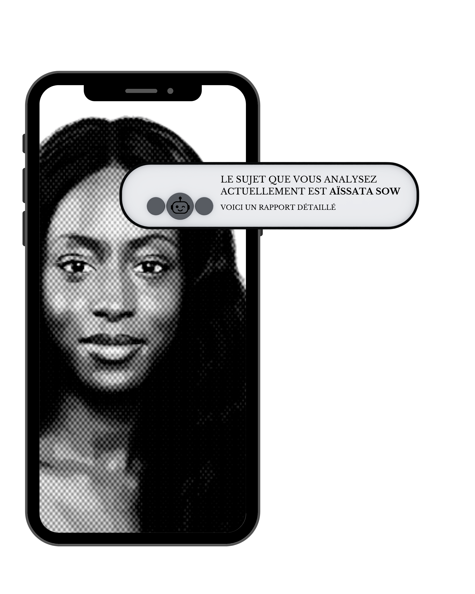

Naviguer entre e-santé et recherche
Observer. Comprendre. Rendre visible.Un parcours construit à la croisée des sciences humaines, du numérique et des enjeux de santé. Bienvenue dans mon univers.

Une curiosité comme point de départ.
J'ai commencé mon parcours par une licence en sciences humaines et sociales avec une spécialisation en numérique. J'ai ensuite poursuivi avec le Master Cultures et Métiers du Web.Ce choix résulte de mon intérêt pour les outils numériques et pour leur capacité à être des vecteurs d'information sous différentes formes : sites web, applications, documentaires interactifs…
L'idée de me confronter à des outils et méthodes variés constitue l'un des éléments clés de mon parcours. Je suis convaincue qu'enrichir ses connaissances sur différents supports permet également d'augmenter sa capacité à répondre à des problématiques, surtout dans un contexte où le numérique occupe une place de plus en plus importante dans notre quotidien.


Agir au-delà des projets.
Depuis près de quatre ans, je suis engagée au sein de l'association Excision Parlons-en ! en tant que secrétaire et ambassadrice. Cet engagement m'a appris que communiquer, c'est aussi écouter, accompagner et créer des espaces de dialogue autour de sujets parfois sensibles. Ayant pour ambition de réaliser et de participer à des projets s'inscrivant dans le domaine de la FemTech, j'ai choisi de m'exercer (pendant et en dehors de mes études) à l'analyse de différents sujets qui couvrent les domaines de la santé, du plaidoyer et de la justice sociale.
Une collection de quelques réalisations au fil du temps
J'ai présenté des photographies dans le cadre d'un atelier photographique de Master 1. Elles proviennent de l'ancien appareil photo de ma grande sœur que j'utilisais souvent lorsque j'étais enfant. Ces images datent d'environ 2012 : j'avais alors dix ans. En parallèle, j'ai souhaité intégrer à cette collection mon dessin préféré : un portrait réalisé en 2025 selon la technique du stippling. Pourquoi réunir des productions séparées par autant d'années ? Leur point commun est la patience. Ces photographies prises à 10 ans (j'en ai 23 aujourd'hui) sont une manière de montrer qu'un ancien travail peut encore être travaillé et réinterprété. Le dessin de 2025 repose lui sur une autre forme de patience : la méthode du stippling qui fait apparaître le portrait point par point. Dans les deux cas, il s'agit de faire émerger une forme progressivement, comme dans la recherche académique, où l'on s'appuie sur des travaux antérieurs et où l'écriture se construit mot après mot.
Une idée ? Parlons-en.
Les meilleures conversations commencent souvent par une simple curiosité.
Discutons par mail !